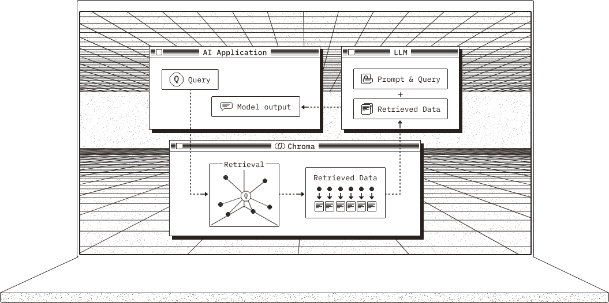
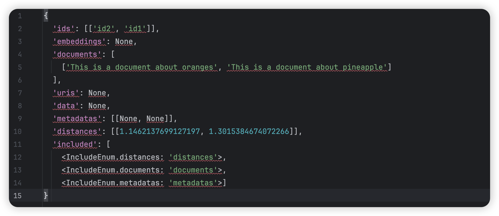

搭建RAG系统
Posted by 付辉 on Monday, December 30, 2024 共2340字在「大模型辅助编程应用」中讲到RAG系统，我也一直想探究RAG的构建，如何在本地可以构建一把？可能和学习一门编程语言类似，先从打印输出 hello world 开始。但是，我没有找到一个不错的参考说明。如果不自己构建，当然可以直接使用其它构建好的RAG平台，但这样其实并不方便，最方便的还是在自己本地有一个RAG系统。
RAG系统最常见的方法通过独立训练的方式构建
从 Hugging Face 网站下载预训练的向量模型和生成模型，借助一些开源工具包便可以快速搭建一个RAG系统。
独立训练
下面给出基本流程示例，局部看懂了，全局就慢慢的懂了。
- 文章切片。按照固定的窗口大小将文章切成若干片段
- 通过OpenAI的向量接口，将每个段落转换为向量【召回模型】
- 将用户提问的问题转换为向量
- 比较问题的向量与所有段落的向量，得到相似程度并排序
- 选取与提问语义最接近的一个或几个段落作为上下文，通过OpenAI的对话接口得到最终答案【生成模块】
在这个过程中，召回模块和生成模块是解耦的，可以随意替换为其它模型或API。也就是说，这两个模块是单独训练完成的，二者之间互不关联。在独立训练类型中，召回模块的向量模型可以完全复用那些经典的模型，或者使用对比损失对自己的数据进行微调，以获得更适合业务的向量模型。
独立训练存在的问题：
- 语言模型的训练并未考虑利用召回数据，这可能导致推理过程中的数据分布存在偏差，对于参数量小的模型更容易产生幻觉
- 向量模型并没有针对语言模型所需应对的场景和领域进行优化，这可能对模型的跨域能力提出较高的要求
Miniforge 环境管理
后面的内容也会有提到 Miniforge 的安装，按照我当下的认知，它主要维护的 python 版本环境，如果你在安装执行 chroma 中遇到问题，建议你尝试更换 python 版本试试。
不同 python 版本差异比较大，向后兼容性不好，所以，本地安装多版本管理非常重要，在尝试了诸多手段还没有效果的情况下，不妨尝试下切换 python 版本。
pyenv 是一个用于管理多个Python版本的工具，可以方便地安装和切换不同版本的 Python。在mac环境下安装 Python 3.9.0 版本，可以使用以下步骤，这样就成功在 mac 环境下安装并切换到了Python 3.9.0 版本：
- 首先打开终端，使用以下命令安装pyenv
brew install pyenv
- 安装完成后，使用以下命令安装Python 3.9.0版本
pyenv install 3.9.0
- 安装完成后，使用以下命令将全局默认的Python版本切换到3.9.0
pyenv global 3.9.0
安装了 miniforge 作为包管理和环境管理工具，默认会安装一个固定 Python 版本的初始化环境，如果要切换为其它版本的 Python，我们需要创建一个指定版本的环境，这很重要：
- 创建一个新环境，环境使用 Python 3.9.0 版本，环境命名为 envpy390，想对应的路径会被存储在 miniforge3/envs 下
conda create -n envpy390 python=3.9.0
- 激活环境，注意：如果没有将 miniforge 加入到PATH路径，conda 需要使用全路径
conda activate envpy390
安装依赖 chroma
向量数据库选用 chroma 开源数据库，图示来源于官方文档，可以通过 pip 进行安装，首先需要安装 python，一般来说，安装 python 的时候会默认安装好 pip。
pip install chromadb

安装的核心在于python环境，尝试使用 pip、pip3安装都失败了，长叹一口气放松一下。说不准可能和之前安装的 miniconda 有关。这次我决定安装 Miniforge 作为包管理工具，Miniforge 开源免费。
安装官方提供的文档逐步进行安装，保存最终的提示输出。命令行还建议我修改 PYTHONPATH 环境变量为当前安装的地址，下面截取其中的部分输出展示：
To activate this environment, use:
micromamba activate /Users/fuhui/miniforge3
Or to execute a single command in this environment, use:
micromamba run -p /Users/fuhui/miniforge3 mycommand
If you'd prefer that conda's base environment not be activated on startup,
run the following command when conda is activated:
conda config --set auto_activate_base false
You can undo this by running `conda init --reverse $SHELL`? [yes|no]
安装完成后就可以开始功能验证，文档「Getting Started」的部分详细描述了验证的流程，这么一顿操作下来，也就算是和 Chroma 有了点头的交情，欢迎入门啦。关于检索数据集中的文本内容，我是有诉求的，我预期检索的是 json 格式的文本，可以理解为服务器上打印的日志内容。
不过，这个简单的例子还是有需要思考的地方：从文本到向量生成采用了什么样的模型？如何指定向量模型、采用这个模型是否符合你的业务预期、有没有更好的向量模型呢？不过，路要一步一步走，不停步就好。
下面是我在 Mac 本地执行的结果，和官方文档的返回示例存在出入。这个示例能否正常运行，取决于你安装的 python 依赖版本。我参考了stackoverflow中的问题，将依赖 onnxruntime 的版本指定为 16.3，并按照编译要求做了调整，总算是让 demo 跑起来了。

pip 对包管理的语法看起来非常便捷，python 语法虽然简单，但工程环境中我也一直没有使用过，借助大模型这次机会，我感觉自己可能会上线一个 python 服务。当然，这些有的没的，不看实力看运气。
pip install numpy<2
关于 chroma 的向量模型
chroma 是向量数据库，demo 中输入的是纯文本，从纯文本到向量的转换需要使用到向量模型，当然，它一定是内置了默认的处理模型，all-MiniLM-L6-v2 Sentence Transformers。在运行 demo 的过程中，就出现过下面这样的报错提示，认真阅读之后觉得不知所云。
return self._sess.run(output_names, input_feed, run_options)
onnxruntime.capi.onnxruntime_pybind11_state.Fail: [ONNXRuntimeError] : 1 : FAIL : Non-zero status code returned while running CoreML_12715953440113264640_1 node. Name:'CoreMLExecutionProvider_CoreML_12715953440113264640_1_1' Status Message: Error executing model: Unable to compute the prediction using a neural network model. It can be an invalid input data or broken/unsupported model (error code: -1).
看到信息中的关键字 「broken/unsupported model」，我差点就以为是 embeding 模型没有被正确安装，好在文档中给出了求证的示例，下面的代码可以正常输出，说明，内置的默认 embedding 模型是正常的。
from chromadb.utils import embedding_functions
default_ef = embedding_functions.DefaultEmbeddingFunction()
val = default_ef(["foo"])
print(val)
结合前面提到的 stackoverflow 的问题，锁定「onnxruntime.capi.onnxruntime_pybind11_state」关键字，尤其是 onnxruntime 和 pybind11 这两个依赖包，反正就是这么一折腾，程序就开心的 run 起来了。
回归向量模型的话题，chroma 集成对接了很多三方的矢量模型，可以通过 API 的方式进行调用，具体细节可以查看 Embedding Functions。
我需要这样的能力，但我的诉求其实是调用我自己本地安装的矢量模型。我希望可以找到满足我需求的，更好的矢量化模型，最好可以通过数据对比得出一个最优解。